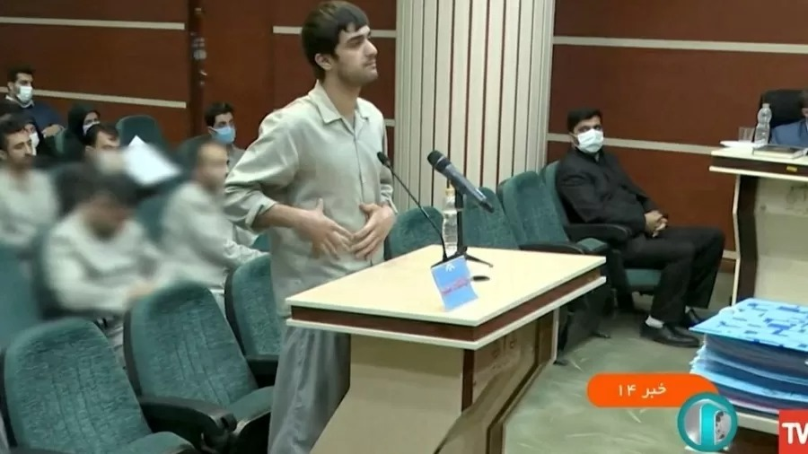

Confissões forçadas e 15 minutos para defesa: o sistema que condena manifestantes à morte no Irã

Quatro jovens foram condenados e executados após os protestos que vêm varrendo o Irã há quatro meses, enquanto outras 18 pessoas aguardam no corredor da morte. Grupos de direitos humanos alegam que as condenações ocorreram após julgamentos fraudulentos e injustos Mohammad Mehdi Karami, um campeão de caratê de 22 anos, foi enforcado em 7 de janeiro, apenas 65 dias após sua prisão. Fontes disseram ao serviço persa da BBC que ele teve menos de 15 minutos para se defender no tribunal. O caso de Karami revela como as autoridades do Irã estão transformando tais julgamentos em espetáculos para instigar medo entre os manifestantes, que exigem liberdade e o fim do regime clerical.
Leia Mais